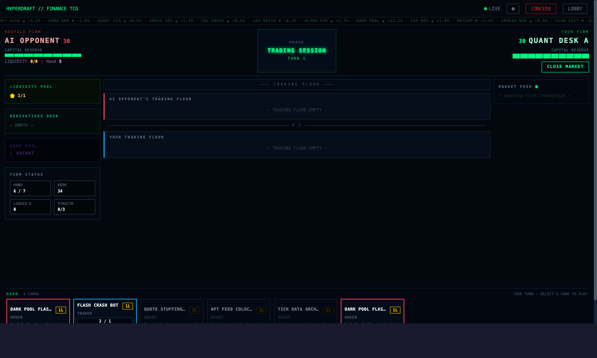

An investment prospectus & rulebook for the trading-floor card game.
Mana ramps like a quant fund's discretionary capital. Combat overflows like a margin call. Leverage gives you alpha — and asks for capital back at Market Close. Welcome to the Trading Floor.

Finance TCG is a two-player game in which rival quantitative-trading desks fight for solvency. Each player controls a desk of Traders, a portfolio of Assets, a wing of Structures, and a stack of Orders, Strategies, and Derivatives. Every turn you either out-trade your opponent or get bankrupted.
The mana system is HS-style ramping Liquidity (1 → 10), but the combat system is MTG-style: declared attackers, declared blockers, and damage that overflows through the front line and into your opponent's Capital Reserve. Three things make Finance TCG distinctive in the Hyperdraft collection:
"We are not in the business of being right. We are in the business of being sized correctly when we are." — internal memo, Quant Desk A
| Instrument Type | Count |
|---|---|
| 📈 Traders | 58 |
| 💱 Orders (instant) | 30 |
| 📊 Strategies (sorcery) | 22 |
| 🏛 Assets (passive) | 17 |
| 🏢 Structures (max 3 per player) | 9 |
| 🎯 Derivatives (attach to Trader) | 14 |
| Total | 150 |
Leverage — placed on Traders by Leverage cards. Each
counter = +1/+0 and 1 capital due at Market Close.
+1/+1 — placed by Short Squeeze returns and select
Strategies; permanent stat boost.
Portfolio Value — only on Monopoly Position; ≥ 20 at
Pre-Market = alternate-win.
Aggro tempo. Cheap Alpha Strike Traders deploy turns 1–4, Direct Market Access boosts Alpha to +4/+0, and a wide multi-attack on turn 9 closes by turn 11. Dark-pool Orders disrupt the opponent's curve.
Midrange. Stack Leverage counters on bodies, manage the capital cost with Theta Decay Trader, Black-Scholes Model, and Theta Decay Collar. Vega Amplifier and Synthetic Long swing for lethal turns 11–13.
Value/wall. 4-toughness Arbitrage Traders soak attacks while Arbitrage generates Liquidity advantage. Portfolio Construction Desk lord buffs the ground game; Pairs Trader cascades. Wins by trader-count asymmetry around turn 13.
Combo/tempo. Stage Dark Pool Orders early to feed Hidden Accumulator and Off-Exchange Boost Rig pumps. Off-Exchange Finisher closes turn 6 via Alpha Strike; Block Trade Sweep is the finisher.
| Turn | Liquidity Available |
|---|---|
| 1 | 1 |
| 2 | 2 |
| 3 | 3 |
| … | … |
| 10+ | 10 (cap) |
Unspent Liquidity does not carry over. Every Pre-Market the pool is fully refilled to your current maximum.
Each turn flows through five phases. Orders may be played at instant speed in any phase the active player can act in; Strategies may only be played at sorcery speed during your own Trading Session or Settlement.
The main action window. You may take any of the following actions in any order, any number of times:
| Action | Cost | Notes |
|---|---|---|
| Play a Trader / Asset / Structure / Derivative | {N} Liquidity | Permanent enters with summoning sickness (Traders only). Structures cap at 3 per player. |
| Play an Order or Strategy | {N} Liquidity | Pushes onto the FinanceStack; opponent gets a response window before resolution. |
| Stage a Dark Pool Order | {N} Liquidity | Goes face-down to the Dark Pool slot instead of resolving. Triggers at start of opponent's next Trading Session. |
| Activate a tap ability | varies | Tap Asset / Structure for its activated effect. |
| Declare attackers | — | Tap Traders, choose targets. Triggers Combat sub-phase. |
Combat sub-phase: declare attackers → opponent declares blockers → simultaneous damage → state-based actions (liquidate Traders with damage ≥ toughness) → return to action loop.
Trample is the default. Excess damage from a blocked Trader overflows directly into the defender's Capital Reserve. Damage on Traders does not reset between combats — only at Market Close. Alpha Strike bonuses are applied before assignment.
Creature-equivalent. Has Aggression (power) and Defense Rating (toughness). Can attack on the turn after it enters (summoning sickness), can block any time, deals damage in combat, and is liquidated when its damage ≥ Defense Rating. May carry Leverage counters, +1/+1 counters, attached Derivatives, and keywords like Alpha Strike or Arbitrage.
Instant-speed. Two flavours:
The Dark Pool slot holds at most one Order. A new Dark Pool Order displaces the old one, sending it to the graveyard unresolved.
Sorcery-equivalent. Higher-impact, slower; only playable during your own Trading Session or Settlement. Pushes onto the FinanceStack the same way Market Orders do. Strategies cannot be played as a response to a stacked spell.
Permanent. Sits on the Trading Floor, cannot attack or block. Provides a passive static effect (e.g., Direct Market Access boosts Alpha Strike bonus to +4/+0) or an activated tap ability. Removed via destruction effects only.
Building. Has tap-to-activate or start-of-phase effects. Maximum three Structures per player on the Trading Floor — the engine refuses entry beyond the cap.
Attaches to a Trader the way an Aura attaches to a creature. When played, it auto-attaches to your highest-power Trader. If you have no Traders, it stages to the Derivatives Desk and auto-attaches to the next Trader you play. Desk capacity: 3 Derivatives per player. While attached, the Derivative grants stat bonuses, keywords, and triggered abilities. Destroyed if its host is destroyed.
| Zone | Owner | Role |
|---|---|---|
| Hand | Per player | Cards held but not played. Cap 7 at Market Close. |
| Library | Per player | Draw pile. Empty = fatigue damage, not loss. |
| Trading Floor (Battlefield) | Shared | Where Traders, Assets, Structures, Derivatives live. |
| Graveyard | Per player | Resolved Orders/Strategies and destroyed permanents. |
| Dark Pool | Shared, capacity 1 | Single hidden Dark Pool Order awaiting trigger. |
| Derivatives Desk | Per player, capacity 3 | Staging area for Derivatives waiting to attach. |
| Exile | Hidden | Short-Sell exile and certain banishments. |
| Finance Stack | Shared | LIFO queue of cast Orders/Strategies awaiting resolution. |
The game runs on three independent resources:
When a Trader with Alpha Strike attacks alone (no other Traders you control are attacking), it gets +3/+0 until Market Close. Direct Market Access upgrades this to +4/+0. Solo damage premium for concentrated positions.
When a Trader with Arbitrage N enters, if you control more Traders than your opponent, gain N Liquidity this turn only (one-shot ramp; doesn't carry over).
A Trader with Leverage N enters with N Leverage counters on it. Each counter grants +1/+0. At Market Close, the controller pays $1 capital per counter on each of their Traders. Counter-removers (Theta Decay Trader, Black-Scholes Model, Theta Decay Collar, Volatility Crush) are how you avoid going bankrupt to your own portfolio.
An Order keyword. When you play a Dark Pool Order, instead of going onto the FinanceStack it goes face-down into the Dark Pool slot — a single shared zone. It triggers at the start of your opponent's next Trading Session, after which it goes to the graveyard. The Dark Pool slot holds one Order at a time; staging another displaces the old one without effect.
Short Squeeze exiles target Trader you control. At the start of your next Pre-Market, it returns to the Trading Floor with two +1/+1 counters. Damage on the Trader resets while exiled. Convexity Rider can adjust the bonus; Cover Short returns it earlier with its counters intact.
Every Trader has trample by default. Damage that exceeds a blocker's remaining toughness overflows to the defender's Capital Reserve. Damage persists on Traders between combats — it only clears at Market Close.
When a non-Dark-Pool Order or Strategy is played, it pushes onto the shared Finance Stack. The opponent gains priority and may respond with Orders only (Strategies are sorcery-speed and cannot be played as responses). Stack resolves LIFO when both players pass priority. Order types that explicitly counter (Execution Glitch, Information Ratio Enforcer, Regime Change Detection) work here.
All 150 cards. Sorted by type, then alphabetically. Costs are in Liquidity ({N}). Stats column shows Aggression/Defense for Traders; — for everything else.
| Name | Cost | Stats | Rules Text |
|---|---|---|---|
| 📈 TRADERS (58) | |||
| Bandwidth Predator | {4} | 2/3 | Alpha Strike. When this deals damage to a Trader, that Trader does not untap next Pre-Market. |
| Basis Trade Analyst | {3} | 4/2 | Leverage 1. When this attacks, you may move 1 Leverage counter from it to another Trader you control. |
| Colocation Server | {2} | 2/2 | Alpha Strike. Summoning sickness does not apply to this Trader. |
| Convexity Rider | {4} | 3/5 | Leverage 2. When this is Short Sold, return with 3 +1/+1 counters instead of 2. |
| Correlation Trader | {3} | 2/4 | Arbitrage 1. Static: your other Traders with Defense Rating 3 or greater get +0/+1. |
| Cross-Sectional Alpha Machine | {6} | 4/5 | Arbitrage 3. When Arbitrage triggers, also gain 1 Liquidity for each Trader you control beyond the opponent count. |
| Crossing Network Pilot | {4} | 3/3 | Leverage 2. When this attacks, deal 1 damage to target Trader regardless of blocking. |
| Dark Flow Aggregator | {3} | 3/2 | When this enters, place a Dark Pool Order from your hand into the Dark Pool zone (bypassing cost). |
| Dark Inventory Position | {3} | 2/3 | When this enters, search your Book for a Dark Pool Order and put it into your hand. |
| Dark Pool Aggressor | {7} | 3/4 | Leverage 3. Arbitrage 2. Alpha Strike. |
| Dark Pool Architect | {5} | 4/4 | Leverage 2. Arbitrage 2. When this enters, you may play a Dark Pool Order from your hand at no cost. |
| Delta Hedger | {3} | 3/4 | Leverage 2. When damage is dealt to this Trader, reduce it by 1 (minimum 0). |
| Drawdown Controller | {4} | 2/5 | When this enters, remove all damage from one Trader you control. |
| Exposure Manager | {2} | 2/3 | Leverage 1. When any Leverage counter is removed from a Trader you control, gain 1 Liquidity. |
| Factor Exposure Desk | {4} | 2/5 | Arbitrage 2. When this enters, if Arbitrage triggers, draw a card. |
| Factor Model Analyst | {2} | 1/3 | Arbitrage 1. When Arbitrage triggers, draw a card. |
| Fill-or-Kill Executor | {3} | 3/2 | Alpha Strike. When this attacks alone and is not blocked, gain 2 Liquidity this turn. |
| Flash Crash Bot | {1} | 2/1 | Alpha Strike. When this enters, gain 1 Liquidity this turn. |
| Front-Running Algo | {2} | 2/1 | Alpha Strike. When this deals unblocked damage to Capital Reserve, draw a card. |
| Gamma Scalper | {4} | 3/3 | Leverage 3. Once per game, if the Market Close drain would reduce your Capital Reserve to 0, remove all Leverage counters instead. |
| Hedge Fund PM | {4} | 4/4 | Leverage 2. When this enters, attach all Derivatives from your Derivatives Desk to this Trader. |
| Hidden Accumulator | {2} | 2/2 | When you play a Dark Pool Order, this Trader gets +1/+1 until Market Close. |
| Institutional Block Trader | {5} | 3/4 | Leverage 2. Arbitrage 1. When this enters, gain 2 Liquidity this turn. |
| Internalized Flow Monster | {7} | 6/5 | Leverage 4. Arbitrage 3. Alpha Strike. When this enters, trigger all Dark Pool Orders currently staged. |
| Latency Arbitrageur | {3} | 3/1 | Alpha Strike. When this attacks alone and deals unblocked damage, it deals 1 additional damage. |
| Leveraged Buyout Specialist | {5} | 5/5 | Leverage 4. When this enters, gain Liquidity equal to its Leverage count this turn. |
| Machine Learning Optimizer | {7} | 4/6 | Arbitrage 3. When this enters, draw cards equal to your Arbitrage triggers this game (maximum 4). |
| Market Maker | {2} | 2/2 | When this enters, gain 1 Liquidity this turn. |
| Mean Reversion Bot | {3} | 1/4 | At the start of your Pre-Market, remove 1 damage from this Trader. |
| Microwave Relay | {4} | 3/3 | Alpha Strike. When this enters, if you have no other Traders, gain 2 Liquidity this turn. |
| Momentum Igniter | {3} | 3/2 | Alpha Strike. When this enters, each other Trader you control gains Alpha Strike until Market Close. |
| Monopoly Position | {7} | 3/5 | Alternate win: at the start of your Pre-Market, if your Portfolio Value counter total is 20 or greater, you win the game. When this enters, place 5 Portfolio Value counters on it. Each other Trader you control with Arbitrage places 1 Portfolio Value counter on this each Pre-Market. |
| Nanosecond Assassin | {5} | 5/3 | Alpha Strike. Leverage 2. Alpha Strike bonus is +4/+0 for this Trader. |
| OTC Behemoth | {6} | 5/5 | Leverage 3. Arbitrage 2. When this attacks alone, opponent cannot play Orders this turn. |
| Off-Exchange Finisher | {5} | 3/4 | Leverage 2. Arbitrage 2. Alpha Strike bonus is +4/+0 for this Trader. |
| Off-Exchange Operative | {3} | 3/3 | Leverage 1. Arbitrage 1. |
| Options Desk Intern | {1} | 2/2 | When this enters, you may attach a Derivative from your Derivatives Desk to it for free. |
| Order Router | {3} | 2/3 | Alpha Strike. When this blocks, draw a card. |
| Pairs Trader | {3} | 2/3 | Arbitrage 2. When this attacks, gain 4 Liquidity this turn. |
| Portfolio Construction Desk | {4} | 3/4 | Arbitrage 2. Your other Traders get +0/+1. |
| Principal Crossings Desk | {4} | 3/4 | Leverage 2. When this attacks, if the Dark Pool slot is occupied, this gets +2/+0 until Market Close. |
| Retail Flow Chaser | {1} | 1/1 | Alpha Strike. |
| Rho Opportunist | {3} | 4/3 | Leverage 1. When a Leverage counter is added to this, draw a card. |
| Risk Manager | {2} | 1/4 | Arbitrage 1. When this blocks, remove 1 damage from it after combat. |
| Risk-Parity Quant | {3} | 3/3 | When a +1/+1 counter is placed on this, place an additional +1/+1 counter on it. |
| Shadow Accumulation Desk | {4} | 3/4 | Arbitrage 2. When this enters, look at opponent's hand. |
| Smart Beta Strategist | {4} | 3/4 | Arbitrage 1. When this attacks, if your Capital Reserve is higher than your opponent's, draw a card. |
| Speed Advantage Desk | {4} | 3/2 | Alpha Strike. Leverage 1. When this attacks alone, +3/+0 applies before Leverage bonus. |
| Spoofing Algo | {2} | 2/1 | Alpha Strike. When this attacks alone, opponent cannot play Orders until Market Close. |
| Statistical Arb Clerk | {1} | 1/2 | Arbitrage 1. (When this enters, if you control more Traders than your opponent, gain 1 Liquidity this turn.) |
| Stealth Position Builder | {3} | 2/4 | When a Dark Pool Order you staged triggers, draw a card. |
| Structured Product Builder | {4} | 4/4 | Leverage 2. Derivatives attached to this cost {1} less to play. |
| Synthetic Long | {4} | 5/4 | Leverage 3. At Market Close, you may pay 2 Capital Reserve per counter instead of 1 to keep all Leverage counters; if you do, this gets +1/+0 permanently. |
| Systematic Rebalancer | {5} | 3/5 | Arbitrage 2. At the start of your Pre-Market, you may move 1 damage counter from one of your Traders to another. |
| Tape Painter | {2} | 1/2 | Alpha Strike. When this attacks alone, gain 1 Liquidity this turn. |
| Theta Decay Trader | {3} | 3/3 | Leverage 2. At the start of your Pre-Market, remove 1 Leverage counter from this (does not cost Capital Reserve). |
| Underlying Asset Runner | {2} | 3/3 | Leverage 1. |
| Vega Amplifier | {4} | 4/3 | Leverage 3. When this enters, each other Trader you control with Leverage gets +1/+0 until Market Close. |
| 💱 ORDERS (30) | |||
| Block Trade Sweep | {3} | — | Dark Pool. When this triggers, destroy target Trader with Defense Rating 3 or less. |
| Book Building | {2} | — | Draw 2 cards. Discard 1 card. |
| Cancel Order | {2} | — | Target Trader cannot attack this turn. |
| Circuit Breaker Trip | {3} | — | Destroy target Trader with Aggression 4 or greater. |
| Cover Short | {2} | — | Return an exiled Trader you own to the Trading Floor immediately, with its counters. |
| Crossed Market | {2} | — | Dark Pool. When this triggers, target Trader cannot block this turn. |
| Dark Pool Flash Order | {1} | — | Dark Pool. When this triggers, deal 2 damage to target Trader. |
| Delta Neutral | {2} | — | Target Trader you control loses all Leverage counters. Remove all damage from it. |
| Efficient Frontier | {3} | — | Prevent all damage to target Trader you control until end of Trading Session. |
| Execution Glitch | {2} | — | Counter target Order. |
| Gamma Hedge | {2} | — | Target Trader you control gets +1/+1 for each Leverage counter on it until Market Close. |
| Hidden Aggression | {2} | — | Dark Pool. When this triggers, target Trader you control gets +2/+0 until Market Close. |
| Iceberg Order | {1} | — | Dark Pool. When this triggers, deal 1 damage to target Trader and draw a card. |
| Information Ratio Enforcer | {2} | — | Counter target Order or Strategy unless its controller pays {2}. |
| Internalization Order | {3} | — | Dark Pool. When this triggers, deal 3 damage to target Trader. |
| Liquidity Provision | {2} | — | Gain 3 Liquidity this turn. (Cannot exceed your Liquidity maximum.) |
| Lit-Market Decoy | {1} | — | Draw a card. You may play a Dark Pool Order from your hand this turn without paying its cost. |
| Off-Exchange Position | {2} | — | Dark Pool. Requires a populated Dark Pool slot to cast. When this triggers, target Trader gets -3/-0 until Market Close. |
| Payment for Order Flow | {2} | — | Dark Pool. When this triggers, gain 3 Liquidity this turn. |
| Pre-Market Raid | {1} | — | During opponent's Trading Session only: deal 1 damage to target Trader. |
| Pre-Positioned Strike | {3} | — | Dark Pool. When this triggers, deal 2 damage to target player's Capital Reserve directly. |
| Quant Signal | {1} | — | Look at the top 3 cards of your Book. Put one into your hand, the rest on the bottom. |
| Quote Stuffing Burst | {2} | — | Target Trader you control gets +3/+0 and Alpha Strike until Market Close. |
| Rebalancing Halt | {2} | — | Target Trader cannot attack this turn. Draw a card. |
| Regime Change Detection | {3} | — | Counter target Strategy. |
| Regulatory Halt | {3} | — | Dark Pool. When this triggers, tap target Trader (it cannot attack this turn). |
| Sharpe Ratio Alert | {2} | — | If your Capital Reserve is at least 5 more than your opponent's, draw 2 cards. |
| Spoofed Bid | {2} | — | Dark Pool. When this triggers, target Trader gets -3/-0 until Market Close. |
| Sub-Penny Intercept | {1} | — | Target attacking Trader gets -2/-0 until end of Trading Session. |
| Volatility Crush | {2} | — | Remove all Leverage counters from target Trader. If opponent's, deal damage equal to counters removed to that Trader. |
| 📊 STRATEGYS (22) | |||
| Acceleration Protocol | {4} | — | Your Traders get +2/+0 until Market Close. Each Trader with Alpha Strike gets +1/+0 additionally. |
| Capital Call | {4} | — | Search your Book for a Trader with Leverage and put it into your hand. Gain Liquidity equal to its Leverage value this turn. |
| Capital Injection | {3} | — | Gain 5 Capital Reserve. |
| Capital Structure Arb | {5} | — | Place 3 Leverage counters on target Trader you control. It also gets Arbitrage 2 until Market Close. |
| Carry Trade | {3} | — | Gain 1 Liquidity for each Leverage counter across all Traders you control (maximum 5). |
| Correlation Matrix | {4} | — | Draw cards equal to Traders you control minus opponent's Traders (minimum 0, maximum 4). |
| Dark Liquidity Surge | {4} | — | Gain 2 Liquidity for each Dark Pool Order that has triggered this game (maximum 6). |
| Factor Neutralization | {5} | — | Destroy all Traders with Aggression greater than Defense Rating. |
| Flash Crash Event | {3} | — | Destroy all Traders with Defense Rating 2 or less. |
| Information Advantage | {3} | — | Draw 2 cards. If you control more Traders than your opponent, draw 3 instead. |
| Information Asymmetry | {3} | — | Gain control of the opponent's currently staged Dark Pool Order. |
| Leveraged Buyout | {4} | — | Gain control of target Trader. Place Leverage counters on it equal to its Defense Rating. |
| Liquidity Event | {4} | — | Gain Liquidity equal to the number of Dark Pool Orders you have played this game (maximum 5). |
| Low-Latency Strike | {2} | — | Each of your Traders with Alpha Strike may attack this turn even if they have summoning sickness. |
| Margin Call | {3} | — | Each of your Traders loses all Leverage counters. For each counter removed this way, deal 1 damage to target opponent Trader. |
| Momentum Ignition | {3} | — | Each of your Traders attacks this turn if able. Traders with Alpha Strike get +2/+0 until Market Close. |
| Portfolio Stress Test | {4} | — | Each player discards down to 3 cards. You draw 2 cards. |
| Pump-and-Dump | {5} | — | Target Trader you control gets +4/+0 until Market Close. Then place 2 Leverage counters on it. |
| Risk-Adjusted Return | {3} | — | Gain Liquidity equal to the number of Traders you control beyond your opponent's count (minimum 0, maximum 4). |
| Short Squeeze | {2} | — | Short Selling — exile target Trader you control. Return it at the start of your next Pre-Market with a +1/+1 counter. |
| Spoofing Campaign | {3} | — | Destroy all Traders with Aggression 2 or less. |
| Vega Spike | {3} | — | Place 2 Leverage counters on target Trader you control. |
| 🏛 ASSETS (17) | |||
| Backtesting Engine | {3} | — | Activated: {2}, tap — look at the top 5 cards of your Book; put one into your hand and the rest on the bottom. |
| Dark Flow Engine | {3} | — | Static: Dark Pool Orders you control cost {1} less to stage. |
| Direct Market Access | {3} | — | Static: your Alpha Strike bonus is +4/+0 instead of +3/+0. |
| Greeks Dashboard | {4} | — | Activated: {2}, tap — add 1 Leverage counter to target Trader you control. |
| HFT Feed Colocation | {2} | — | Static: your Traders with Alpha Strike get +1/+0. |
| High-Speed Network | {4} | — | Activated: {2}, tap — give target Trader Alpha Strike until Market Close. |
| Implied Volatility Surface | {3} | — | Static: Traders you control with Leverage counters get +0/+1. |
| Live P&L Dashboard | {4} | — | At the start of your Research phase, draw an additional card if you control more Traders than your opponent. |
| Off-Exchange Yield | {4} | — | At the start of your Market Close, if a Dark Pool Order triggered this turn, gain 3 Capital Reserve. |
| Order Flow Analytics | {3} | — | At the start of your Pre-Market, if the Dark Pool slot is occupied, gain 2 Liquidity this turn. |
| Portfolio Diversifier | {2} | — | Your Liquidity maximum is 1 higher than normal (max 11). |
| Risk Attribution Model | {3} | — | Static: your Traders with Defense Rating 4 or greater get +0/+1. |
| Sharpe Ratio Monitor | {2} | — | At the start of your Pre-Market, if you control more Traders than your opponent, gain 1 Liquidity this turn. |
| Speed Co-location Hub | {3} | — | At the start of your Trading Session, you may have one Trader lose summoning sickness this turn. |
| Systematic Alpha Engine | {4} | — | At the start of your Pre-Market, if you control more Traders than your opponent, gain 2 Liquidity this turn. |
| The Black-Scholes Model | {3} | — | At the start of your Pre-Market, you may pay 1 Liquidity to remove 1 Leverage counter from any Trader you control. |
| Tick Data Archive | {2} | — | At the start of your Pre-Market, if any of your Traders attacked alone last turn, draw a card. |
| 🏢 STRUCTURES (9) | |||
| Alpha Capture Platform | {4} | — | At the start of your Trading Session, your Traders with Arbitrage get +1/+0 until Market Close. |
| Dark Venue Console | {4} | — | At the start of your Trading Session, you may pay {1} to trigger the staged Dark Pool Order immediately. |
| Derivatives Desk Console | {3} | — | At the start of your Pre-Market, if you have at least one Derivative on your Derivatives Desk, draw a card. |
| Low-Latency Exchange | {4} | — | At the start of your Trading Session, each of your Traders with Alpha Strike gets +1/+0 until Market Close. |
| Order Matching Engine | {3} | — | Tap: target Trader you control gets +2/+0 until Market Close. |
| Principal Trading Desk | {4} | — | At the start of your Pre-Market, if the Dark Pool slot is empty, draw a card. |
| Quant Lab | {3} | — | At the start of your Pre-Market, if you control more Traders than your opponent, gain 2 Liquidity this turn. |
| Research Server Farm | {4} | — | At the start of your Research phase, draw an additional card if your Capital Reserve is 10 or more above your opponent's. |
| Risk Waterfall | {4} | — | At the start of your Market Close, reduce the Capital Reserve cost of Leverage counters on one of your Traders by 1 (minimum 0 per counter). |
| 🎯 DERIVATIVES (14) | |||
| Covered Call | {2} | — | Attach to a Trader: it gets +1/+0 and, when it attacks unblocked, gain 1 Liquidity. |
| Delta Neutral Wrap | {2} | — | Attach to a Trader: remove all damage from it and it gets +0/+2. |
| Gamma Amplifier | {3} | — | Attach to a Trader: it gets +2/+1. Its Leverage counters cost 0 Capital Reserve at Market Close this turn. |
| Iron Condor | {3} | — | Attach to a Trader: when this Trader is blocked, deal 1 damage to the blocker. |
| Off-Exchange Boost Rig | {3} | — | Attach to a Trader: when a Dark Pool Order triggers, this Trader gets +2/+0 until Market Close. |
| Portfolio Insurance Wrap | {3} | — | Attach to a Trader: when this Trader would be destroyed, instead remove this Derivative and it survives with 1 Defense Rating remaining. |
| Protective Put | {2} | — | Attach to a Trader: the first time this Trader would be destroyed, remove this Derivative instead. |
| Rho Leverage Amplifier | {3} | — | Attach to a Trader: it gets +1/+1 for each Dark Pool Order that has triggered this game (maximum +4/+4). |
| Shadow Protocol Module | {2} | — | Attach to a Trader: Dark Pool Orders you stage while this Trader is on the field cost {1} less. |
| Signal Processing Rig | {2} | — | Attach to a Trader: it gains Arbitrage 1. When Arbitrage triggers, remove 1 damage from it. |
| Speed Amplifier | {2} | — | Attach to a Trader: it gets +2/+0. When it attacks alone, draw a card. |
| Synthetic Collar | {3} | — | Attach to a Trader: it gets +1/+1 for each Derivative attached to it (including this one). |
| Theta Decay Collar | {2} | — | Attach to a Trader: it gets +1/+2 and loses 1 Leverage counter at the end of each Pre-Market. |
| Ticker Tape Derivative | {2} | — | Attach to a Trader: it gains Alpha Strike. |
Loss: Capital ≤ $0 (bankruptcy)
Alt-win: Monopoly Position with ≥ 20 Portfolio Value counters at start of your Pre-Market
Empty library: not a loss; fatigue damage on draw
Orders — instant; respond to stack
Strategies — sorcery; your own Trading Session / Settlement only
Dark Pool Orders — instant on cast; resolve at start of opponent's Trading Session
Q: If I have two Leverage Traders, what does Market Close cost me?
A: $1 per counter per Trader. A Lev-3 Vega Amplifier and a Lev-2 Delta Hedger cost you $5 capital at the bell.
Q: Does Alpha Strike apply when I attack with two Alpha-Strike Traders?
A: No — by rules text "alone" — only one Trader gets the bonus. (See engine note: in current code only the first declared attacker gets +3/+0 in a multi-attack; this is documented as a known engine asymmetry.)
Q: Can I respond to my opponent's Strategy with a Strategy?
A: No. Strategies are sorcery-speed and cannot be played in response. You can answer with an Order (Execution Glitch, Information Ratio Enforcer, Regime Change Detection).
Q: What happens to a Derivative if I play it with no Traders out?
A: It stages on your Derivatives Desk (capacity 3). The next Trader you play absorbs it automatically.
Q: Does a Dark Pool Order trigger if my opponent skips combat?
A: Yes — Dark Pool Orders trigger at the start of opponent's next Trading Session phase, regardless of whether they actually attack.